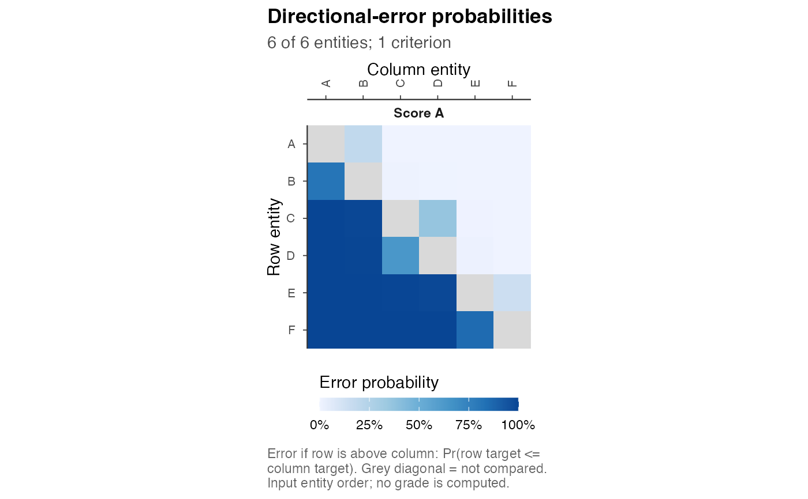
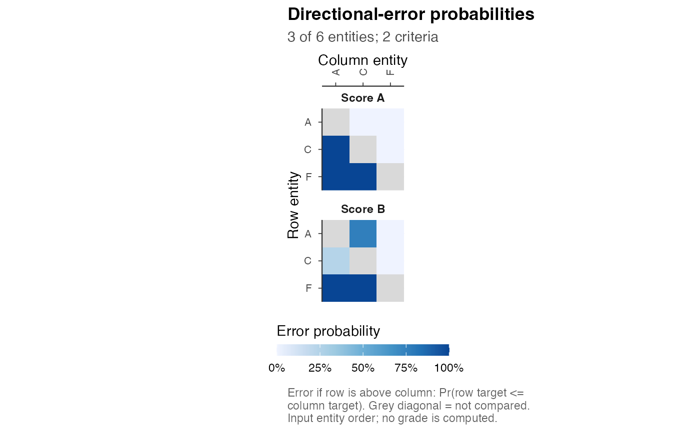

Plot Posterior Directional-Error Probabilities
postrank_plot_pairwise.RdFor each possible reporting direction, the figure displays Pr(row target <= column target), the expected error from placing the row entity above the
column entity. A separate square matrix is shown for each criterion.
Self-comparisons are excluded, with NA diagonal entries displayed in gray.
Usage
postrank_plot_pairwise(
x,
criteria = NULL,
entities = NULL,
max_entities = 20L,
entity_labels = NULL,
criterion_labels = NULL,
ncol = NULL
)Arguments
- x
A
postrank_analysis,postrank_fit, preparedpostrank_pairwise,postrank_probabilitiesorpostrank_coefficients. Raw posterior draws and tie-aware equality-neutral inputs are unsupported.- criteria
Optional nonempty subset and display order of criterion IDs.
- entities
Optional distinct entity IDs; at least two are required. Their display order follows the stored input or result, not this vector.
- max_entities
Automatic display limit, an integer at least two; default 20.
NULLshows all entities. Explicitentitiesoverride the limit.- entity_labels, criterion_labels
Optional partial named maps from original IDs to display labels. Final labels must be distinct. The data retain their original IDs.
- ncol
Positive integer number of facet columns; default at most two.
Value
A ggplot object with original entity and criterion IDs and
error_probability in its plotted table. No stored input is changed.
Details
A cell is not a selected grade, a probability of withholding or a claim of equality. Larger target values mean higher priority, so a small cell value supports placing its row entity above its column entity. In this ordinary zero-equality domain, opposite off-diagonal directions sum to one.
The figure reads prepared probabilities; it does not aggregate raw draws, fit a model, evaluate an action or solve. A fit without a validated incumbent can still show its prepared input. Analyses with a card use its stored entity order; other validated actions use grade then ID; bare inputs and fits without an action retain input order. No posterior scores are computed for ordering.
Automatic selection spreads entities across stored grades, or across input
order when no action is available. It is a display selection, not a
representative sample. Use a larger figure for a large explicit selection.
postrank_plot_data() with which = "pairwise" returns the complete
unfiltered table, including every diagonal sentinel.
Examples
# Prepared K = 1 and K = 2 Gaussian probabilities for six fictional sites.
# No analysis or solver is needed to inspect these inputs.
postrank_plot_pairwise(pr_tutorial$one,
criterion_labels = c(score_A = "Score A"))

Open full-size figure
postrank_plot_pairwise(pr_tutorial$two, entities = c("A", "C", "F"), ncol = 1,
criterion_labels = c(score_A = "Score A", score_B = "Score B"))

Open full-size figure